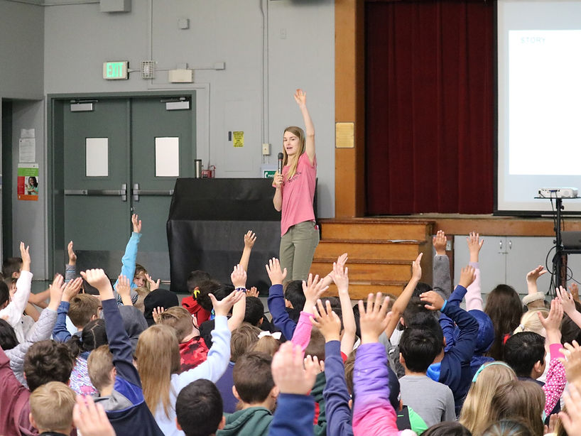

Gallery 01
Traditional oil & watercolor
Three gallery lanes from your sitemap structure.
Traditional oil & watercolor

Digital illustration

Wood & ceramic work
Each gallery can expand into its own dedicated page later. For now, this keeps the top-level site map clean and easy to navigate.
Using scraped assets where beneficial: images on this page are pulled from the archived source set and optimized for layout consistency.